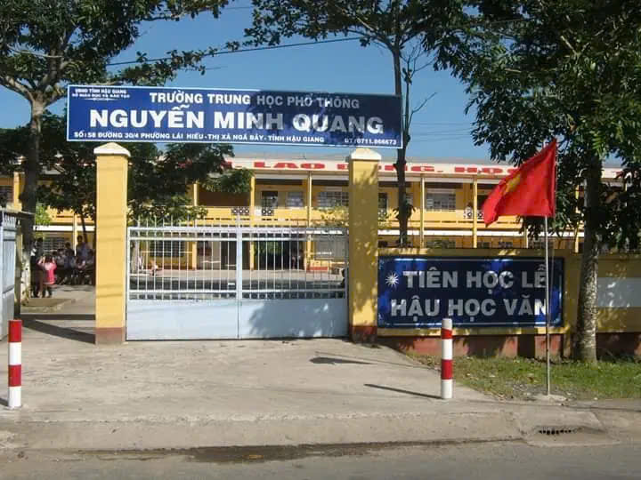
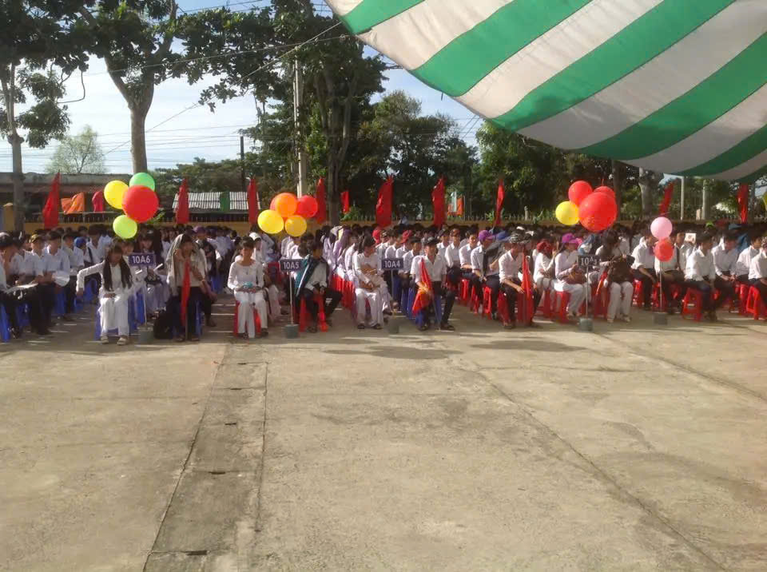

- Lịch sử hình thành
Trường THPT Nguyễn Minh Quang - Hậu Giang ra đời do nhu cầu học tập và rèn luyện của người dân được nâng lên do tư duy phát triển, muốn cho con em mình theo học cấp 3 để lấy kiến thức khi trưởng thành bước vào đời sẽ có những cơ hội là cho cuộc sống của mình tốt đẹp hơn. Trải qua nhiều năm nỗ lực phấn đấu và trưởng thành, trường đã gặt hái được không ít những thành công, không ngừng khẳng định vị thế của mình trong sự nghiệp giáo dục của tỉnh nhà. Đến này, trường THPT Nguyễn Minh Quang - Hậu Giang vẫn là một trong những trường đứng top đầu trong tỉnh.

Những năm đầu thành lập, trường chỉ có 10 lớp 10 với 21 cán bộ giáo viên được điều chuyển từ các trường lân cận, nhưng cùng với sự phát triển của đất nước, Trường THPT Nguyễn Minh Quang - Hậu Giang đã không ngừng trưởng thành với những bước đột phá mới, mang lại diện mạo mới đáng tự hào cho nền giáo dục tỉnh Hậu Giang.
Cổng trường Trường THPT Nguyễn Minh Quang
- Điểm tuyển sinh đầu vào qua các năm
Điểm tuyển sinh lớp 10 cũng là một trong những tiêu chí rất quan trọng để đánh giá Trường THPT Nguyễn Minh Quang - Hậu Giang có tốt không? Để đảm bảo chất lượng dạy và học, những năm vừa qua điểm sàn trong kỳ tuyển sinh lớp 10 của trường luôn đứng vào top đầu các trường THPT của tỉnh. Bởi vì khoảng cách học lực không quá xa sẽ tạo điều kiện thuận lợi cho việc rèn luyện và học tập của học sinh tại trường. Tuy nhiên mức điểm này không phải là quá cao, nên các bạn học sinh hãy yên tâm ôn luyện thật kỹ, chắc chắn sẽ giữ được một tấm vé bước vào trường THPT Nguyễn Minh Quang - Hậu Giang . Vào trường các em sẽ là những con ngoan, trò giỏi của trường, từng bước được các thầy cô hướng dẫn và rèn luyện để các em có đầy đủ kiến thức làm hành trang bước vào đời.

- Cơ sở vật chất
Về cơ sở vật chất, nhà trường đã được trang bị tương đối đầy đủ các phòng thực hành thí nghiệm như Vật lý, Hóa học, Sinh học; phòng máy vi tính, phòng Hi-class, phòng nghe nhìn với các thiết bị khang trang, hiện đại hơn. Đồng thời nhà trường cũng đã chủ động xây dựng Website, mạng LAN, hệ thống Wifi, máy chiếu tích hợp bảng thông minh cho tất cả các phòng học. Đã bước đầu đã đáp ứng được nhu cầu đổi mới phương pháp giảng dạy và ứng dụng công nghệ thông tin tại nhà trường. Các tiết dạy học được trình chiếu lên màn hình lớn kèm với ví dụ minh họa sẽ kích thích sự thu hút cho các em đặc biệt là các tiết thực hành có thí nghiệm như môn Hóa học, vật lý và sinh học.
Ngoài ra, trường còn có sân vận động và nhà đa chức năng để tổ chức các hoạt động ngoại khóa, các cuộc thi đấu thể thao nâng cao sức khỏe. Đáp ứng tiêu chí vừa học vừa chơi cho học sinh khi tham gia học tập rèn luyện tại trường.
- Đánh giá Trường THPT Nguyễn Minh Quang
Những thành tích đầu ra mà nhà trường đã đạt được có thể kể tới là: Trường đã đào tạo ra hàng ngàn học sinh sau những năm phấn đấu không ngừng nghỉ. Với chất lượng giáo dục mũi nhọn cũng đứng được trong top đầu các trường THPT trong khu vực và toàn tỉnh Hậu Giang.
Các kỳ thi tham gia chọn học sinh giỏi các môn năm học cũng có học sinh đạt giải nhiều nhất ở các môn: Toán, Lý, Sinh, Hóa, Văn, Tiếng Anh và giáo dục công dân. Tỉ lệ tốt nghiệp THPT quốc gia luôn đạt từ 95 đến 98%. Tỷ lệ học sinh đậu vào các trường cao đẳng, đại học đạt được con số đáng phấn khởi. Một số em đã nỗ lực phấn đấu đậu được vào các trường nổi tiếng danh giá thuộc top đầu các trường đại học có tiếng trong nước ở khu vực phía nam như: Đại học an ninh nhân dân, Đại học kinh tế TP. Hồ Chí Minh; Đại học Bách Khoa, Đại học sư phạm .v.v.
Cũng chính từ mái trường này, nhiều thế hệ học sinh đã trưởng thành và đang đảm nhận các chức vụ chủ chốt của tỉnh, của các ban ngành và cán bộ địa phương.
Với những thành tích đã đạt được, trong những năm qua, Trường THPT Nguyễn Minh Quang đã được trao tặng những phần thưởng cao quý như: Cờ thi đua, bằng khen trường đạt danh hiệu tiên tiến xuất sắc; Chi bộ đạt tiên tiến, trong sạch vững mạnh; Công đoàn được tặng giấy khen nhiều năm; Chi đoàn được tỉnh đoàn tuyên dương có thành tích xây dựng công tác đoàn năng nổ.
Hàng năm vào các dịp lễ tết, nhà trường thường phát động học sinh và giáo viên quyên góp đi tặng quà cho các hộ chính sách, các em cơ nhỡ, người già neo đơn và các bạn học sinh nghèo vượt khó vươn lên trong học tập. Việc làm tuy nhỏ nhưng luôn được đánh giá cao vì làm ấm lòng được người nhận.
- Học phí Trường THPT Nguyễn Minh Quang
Học phí trường THPT Nguyễn Minh Quang - Hậu Giang quy định bởi sở GD& ĐT tỉnh Hậu Giang qua các năm.
Với những thông tin mà chúng tôi cung cấp trên đây chắc chắn đã có thể giúp quý phụ huynh và các em học sinh đánh giá Trường THPT Nguyễn Minh Quang - Hậu Giang có tốt không một cách khách quan nhất.